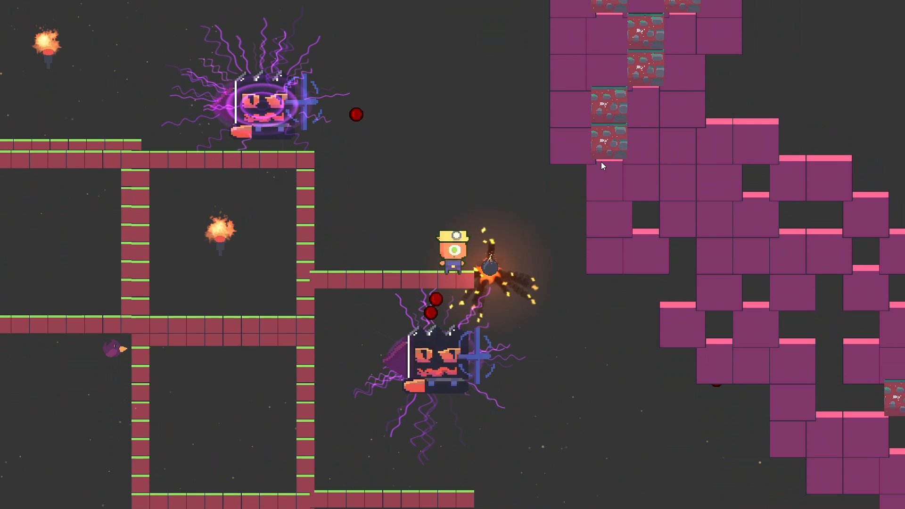

BOOM MINER
SPEED PLATFORMER PROTOTYPE

THE DIRECTIVE
Speed is violence. Boom Miner isn't a game about collecting coins; it's about tearing through a futuristic underground mine while being relentlessly hunted. I didn't want the player to feel powerful—I wanted them to feel desperate. Every structure, every wall, every platform in the mine is collateral damage. If it stands in your way, you blow it to hell. If you stop moving, you die.
THE PIVOT
The original prompt was 'Destroy'. I started building a methodical, top-down puzzle game—and it was boring. I hated it. So I ripped the brakes out. A "happy accident" with an old physics script injected the prototype with a frenetic, Spelunky-esque inertia. I realized pacing is everything. I violently pivoted the entire design document into a high-speed platformer within 24 hours. I didn't fix the chaos; I weaponized it.
THE ENGINE OF CHAOS
- Non-Linear Destruction: There is no fixed path. Level design is just a suggestion. You carve your own brutal route by blowing the architecture to pieces as you go.
- Relentless Predators: I coded the AI to refuse logic. They don't patrol; they hunt. They will chase the player to the absolute edges of the level until dealt with.
THE AUTOPSY
The Blood: The game succeeded in delivering a stark visual palette, heavy "game juice" (screen shake, particle gore), and a core loop that spikes the player's adrenaline.
The Flaw: I gave the player too much explosive freedom without enough structural choke-points. Without strict spatial constraints, players could blast out of bounds, bleeding out the tension. It was a harsh, bleeding lesson in ruthless scoping—never give the player a bomb before you've built an unbreakable box to trap them in.